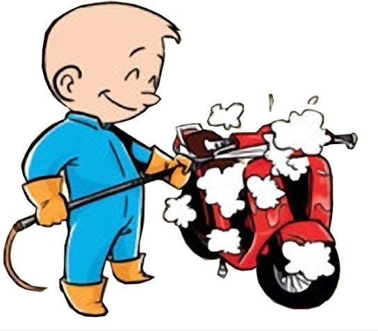

seiring bertambahnya jumlah kendaraan di Indonesia maka bisnis cuci kendaraan pun semakin marak dan diminati. kita dapat menilik data BPS. jumlah mobil di indonesia mencapai 9,8 juta dan motor mencapai 47,6 juta di Tahun 2008, Jika boleh berandai-andai ; rata-rata 1 unit kendaraan dicuci 1 minggu sekali, maka ada 1.4 juta mobil dan 6,8 juta motor yg harus dicuci per harinya. Bayangkan jika semua kendaraan tersebut di cuci di tempat pencucian maka setiap hari ada ( 1.4 juta mobil X rata2 ; Rp 15.000,-/oks cuci) = 21 milyar/hari uang masuk ke bengkel cuci mobil. Dan ( 6.8 juta motor X rata2 ; Rp 6.000,-/oks cuci) = 40 milyar / hari uang masuk ke bengkel cuci motor. maka tidak heran jika usaha ini begitu diminati dan berkembang seiring bertambahnya jumlah kendaraan di Indonesia.
Galeri kami
Alamat: Jl. kali urang
no. 70 km. 7
Sleman, Yogyakarta
Telpon: 08112335702